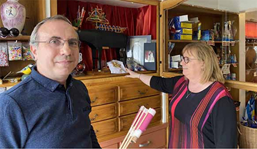

Landes
Une douche froide sur les feux d'artifice
Cousins, Laurent et Frédérique Marmajou sont les deux cogérants de l’entreprise de pyrotechnie fondée à la fin du XIXe siècle, à Orist, et installée depuis à Dax. PHOTO B.F
Dax - Sans rassemblements estivaux, l'entreprise Marmajou et le monde de la pyrotechnie s'attendent à souffrir
Nos sens, endormis en cette période de confinement, se réveilleront-ils au premier feu d'artifice tiré ? Propice à l'émerveillement des foules, le spectacle pyrotechnique reste associé, notamment, à la date du 14 juillet. " Si la France est obligée de passer sa fête nationale sans feu d'artifice nulle part, ça va être tristoune, ça va faire tout drôle ", prévient Frédérique Marmajou. Avec son cousin, Laurent, elle gère une entreprise de pyrotechnie, fondée en 1899 et localisée, depuis, à Dax. "À ce jour, ce sont 95 % des feux qui sont annulés, alors je peux vous dire que le monde de la pyrotechnie est très inquiet. D'ailleurs, le syndicat des fabricants d'explosifs - aussi bien militaires que de divertissement - a écrit une lettre à l'attention du Premier ministre, pour le mettre en garde contre le danger de disparition à long terme de la branche de la pyrotechnie de divertissement", poursuit Frédérique.